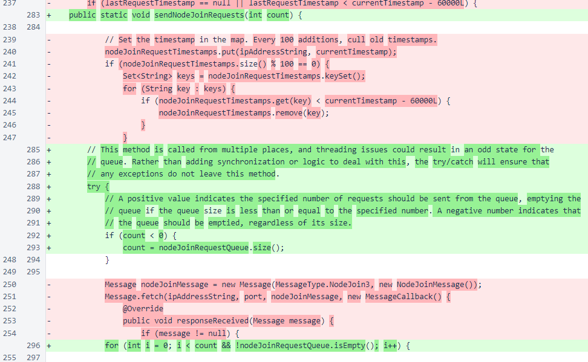
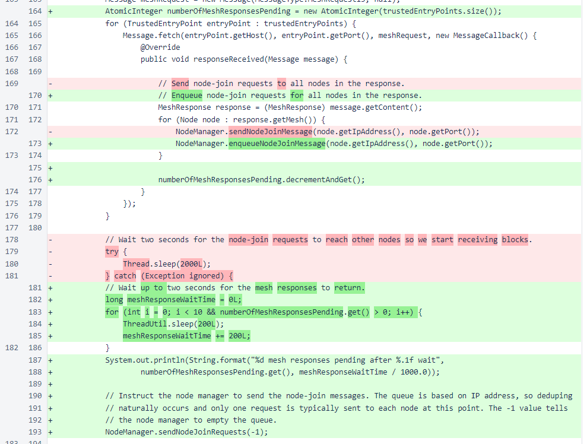
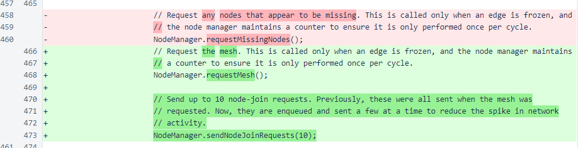
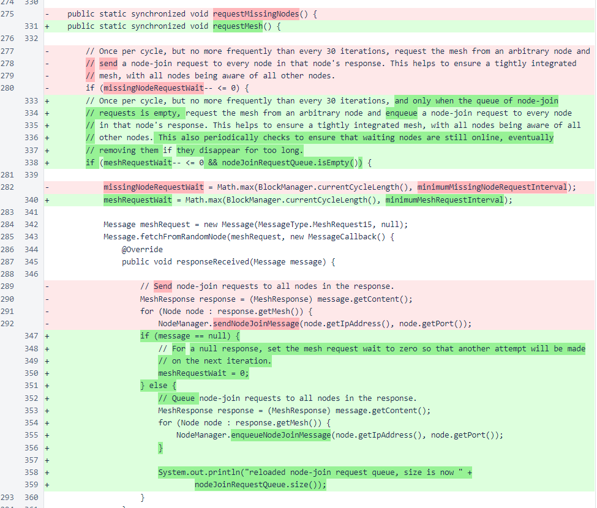
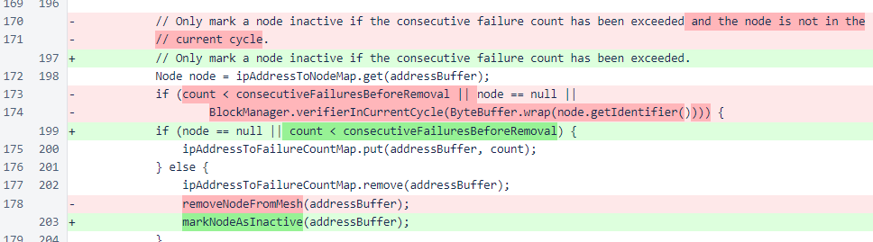
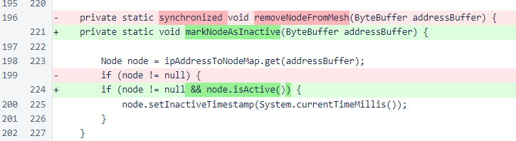
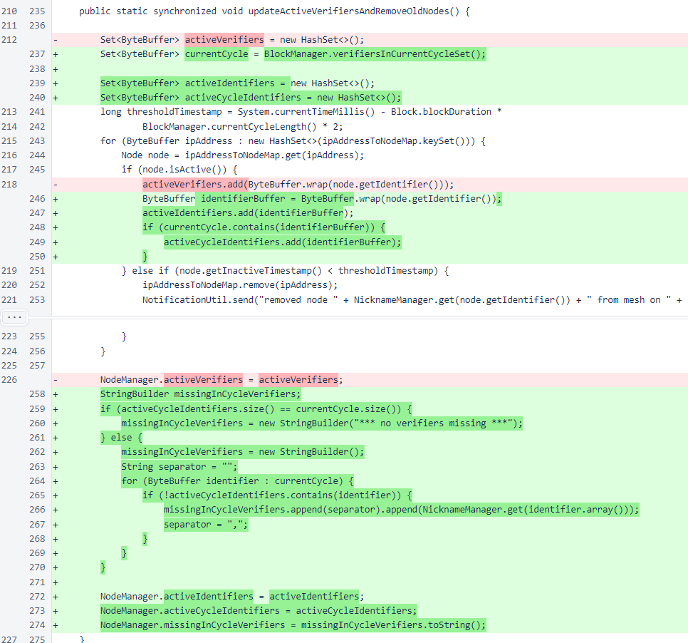
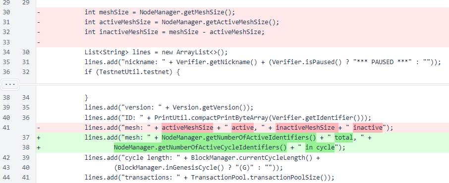

Nyzo version 484 (commit on GitHub) improves node management for the verifier.
This version does not alter behavior of the sentinel. The classes and methods modified are only used by the verifier.
As the cycle and mesh grow, the importance of managing network traffic increases. Previously, node-join messages were typically sent in short bursts. These short bursts could potentially trigger anti-DDoS protections on some cloud providers, and they could also result in excessive memory consumption. This update changes the process for sending node-join messages, replacing most of the short bursts with a small number of messages just after each block is frozen.
This update also corrects an issue in which inactive in-cycle nodes would never be removed from the mesh, and it improves reporting about mesh in the status response.
In the NodeManager class, the method that would send node-join messages on demand has been replaced with a method that adds the requested IP addresses and port to a queue. The queue is stored in a map on IP address, so if the same address is added to the queue multiple times before the first request is sent, the new entry will overwrite the old entry and prevent the request from being sent multiple times. This is the desired behavior, especially in the bootstrap process, where node-join messages are sent to every node in the meshes returned by all trusted entry points.

The method that sends node-join requests sends a specified number of requests on demand, selecting elements arbitrarily from the queue.
In the verifier bootstrap process, requests are enqueued for all nodes returned by all trusted entry points. Then, this method is called with a negative value, which causes the entire queue to be sent at once. While this does cause a burst in traffic as it did before, this is at a point in the process where the verifier is not yet sending block votes, so the peak outgoing traffic of the verifier is still lower than it was before.
In normal verifier operation, a call to request the mesh is made once each time a block is frozen. Then, up to 10 requests are sent from the queue.
The NodeManager method that requests the mesh maintains a counter to ensure that the queue is repopulated no more than once per cycle, and a check is performed to ensure the queue is not repopulated unless it is empty. The requirement that the queue be empty before it is repopulated is important, as the queue uses a FIRO (first-in-random-out) behavior, and this condition helps to ensure that all nodes in the mesh are queried at a reasonable interval. This method, when executed at an inconvenient time when block votes were also being broadcast, was especially problematic before this update.
Also in the NodeManager class, a condition was removed that had prevented in-cycle verifiers from being marked as inactive. This condition was initially added on the assumption that a verifier would eventually be removed from the cycle if it was inactive, but it did not take into account multiple instances with the same identifier, changed IP addresses, or the sentinel.
The removeNodeFromMesh() method has been renamed to markNodeAsInactive() to better reflect its purpose. Also, a check is now performed so that an inactive node is not marked again with a newer inactive timestamp.
The updateActiveVerifiersAndRemoveOldNodes() method has been updated with an additional set to track in-cycle verifiers, and a field has been added to display any in-cycle verifiers that are currently unknown to the node manager. The activeVerifiers set has also been renamed to activeIdentifiers to improve code clarity.
The status response has been updated to provide better information about the mesh connections. The number of inactive nodes, displayed previously, typically overstated the actual number of inactive nodes, as it displayed the difference between active nodes and unique identifiers on the mesh, which caused duplicate identifiers to be counted as inactive nodes. Rather than correcting the issue, the number of inactive nodes was removed entirely, and the number of active cycle identifiers was added, as this is a much more important value in determining the health of the mesh.
The requester identifier has been added to the status response to aid in diagnosing why the public or privileged response was returned, and the number of node-join messages sent and the missing in-cycle verifiers have been added to show how the node-join modifications in this update are performing.